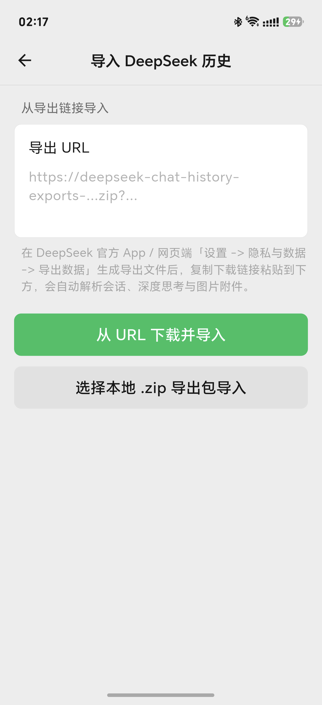

06 / 08 · DeepSeek 迁移
官方客户端聊天受限？老对话记录千万别丢
支持导入 DeepSeek 官方
聊天数据，无缝接着聊！
在官方「导出数据」拿到下载链接或 .zip 包，整段对话历史一键无损搬进本地
STEP 1URL 或本地 .zip 直接导入
无需电脑中转或折腾脚本！在官方 App / 网页端生成导出后，直接粘贴下载链接或选本地 .zip 包即可解析
STEP 2分支树 / 思考链 / 图片全保留
完整解析官方 conversations.json 对话分支、<THINK> 深度思考过程与 WebP 图像附件，自动跳过重复会话
STEP 3接入自有 Key 本地接管续聊
导入后即变为微信列表独立会话，自带 DeepSeek V4.1 Flash（兼容 OpenAI 接口），顺着历史上下文继续开聊
不限官方额度
THINK 折叠还原
防重增量导入
全本地 SQLite

导入后还能做什么？
✓ 按原上下文继续发消息 · ✓ 查看思考过程 · ✓ 二次导出为 SQLite / JSON / MD / HTML 永久归档